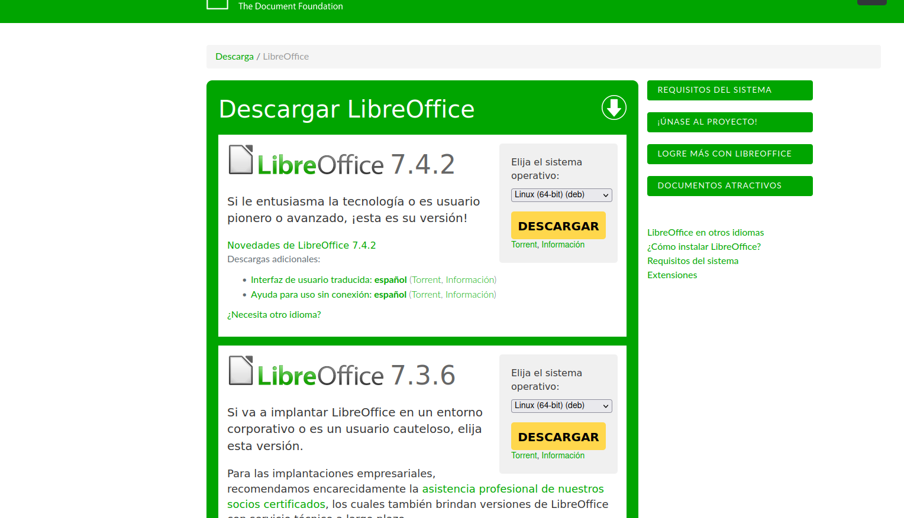
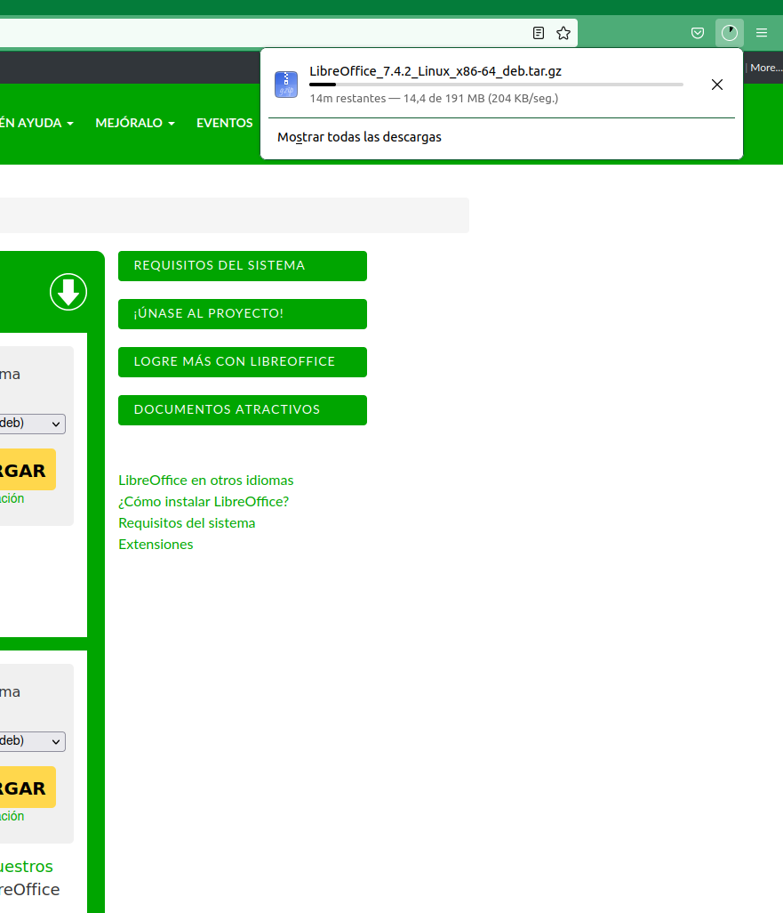
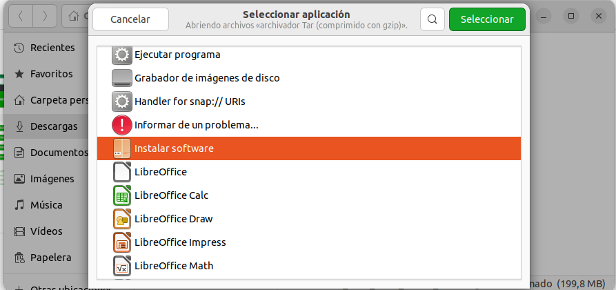
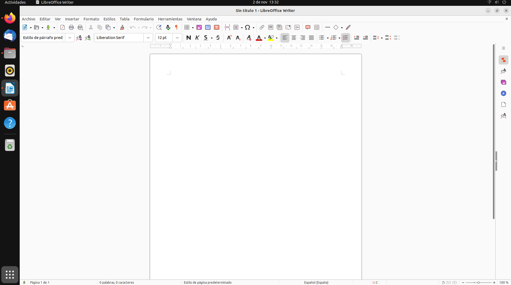

1ª Descargamos el
paquete ofimático desde
la web oficial de OpenOffice

2ª Ejecutamos el instalador
y seguiremos los
pasos pertinentes

3ª Seleccionamos abrir el archivo
con el Instalador de Software
y empezará la instalación

4ª Una vez instalado el programa
no nos pedirá ajustes
adicionales como en otros programas
y podremos empezar a utilizarlo